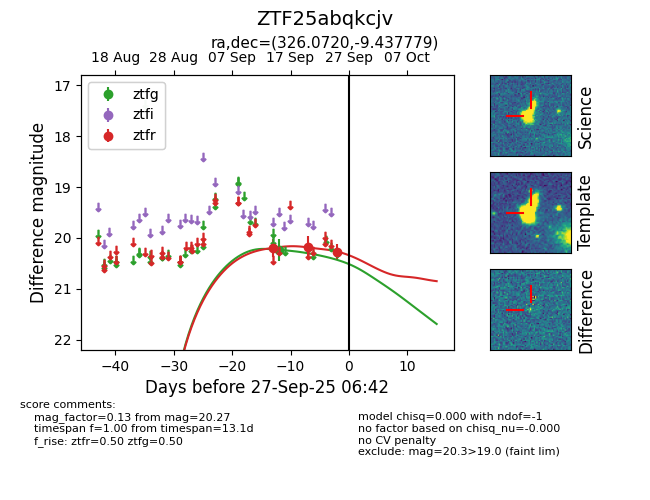
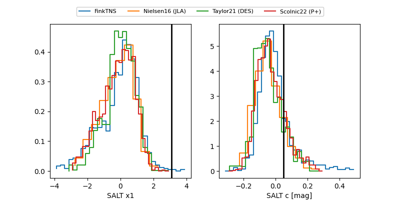

FINK: ZTF25abqkcjv
Lasair: ZTF25abqkcjv
ALeRCE: ZTF25abqkcjv
ZTF25abqkcjv (ztf,fink)
equatorial (ra, dec) = (326.0720,-9.43778)
galactic (l, b) = (45.6341,-42.52433)


last ztfg=20.23, ztfr=20.27
1 ztfg, 3 ztfr detections